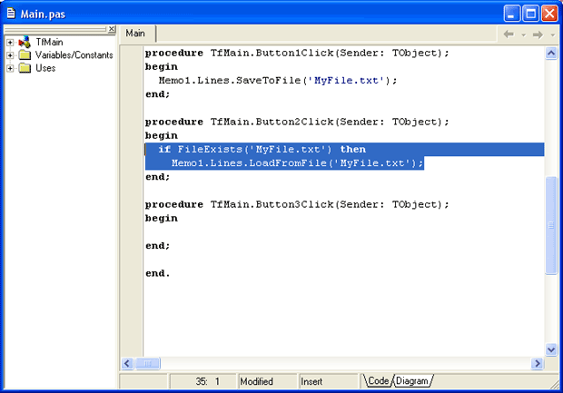
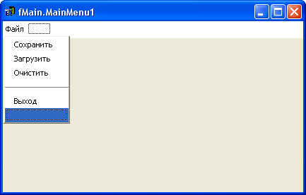

Главное меню
Любая более-менее серьезная программа имеет собственное меню.
Пришла пора познакомиться с этим компонентом.
Для примера снова загрузим наш редактор текстов.
Выделите все кнопки на форме и удалите их.
Также удалите и панель, на которой эти кнопки были.
Затем нам потребуется удалить все процедуры обработки этих кнопок, но тут нужно проявить осторожность – нельзя просто взять, и удалить процедуру.
Каждая сгенерированная процедура прописана в коде и выше.
Чтобы без ошибок удалить все ненужные последние процедуры, следует просто удалить из них тот код, который мы писали сами, оставив "пустую" процедуру – имя процедуры и строчки begin.. end:
После того, как вы сохраните проект, все пустые процедуры будут удалены автоматически.
Это касается последних процедур – если после такой пустой процедуры будет присутствовать действующая процедура или функция, они обе останутся в коде.
Таким образом, у вас должна получиться форма, на которой расположен только компонент Memo, и больше ничего.
В редакторе кода не должно остаться ни одной процедуры.
В общем, только заготовка программы.
Выделите компонент Memo, и убедитесь, что в его свойстве Align установлено значение alClient, то есть, Memo растянуто на всю форму.
На вкладке Standard найдите компонент MainMenu (главное меню), и установите его на любое место формы, прямо на компонент Memo.
Компонент MainMenu невизуальный, то есть, пользователь все равно не будет его видеть.
Будем создавать меню.
Дважды щелкните по MainMenu, чтобы вызвать редактор меню.
Когда редактор откроется, вы увидите, что первый пункт меню выделен синим цветом.
Пусть выделение остается, перейдите на свойство Caption и введите текст "Файл".
Нажав <Enter>, вы сформируете в меню команду "Файл", а выделение переместится направо, к следующей команде.
Другой пункт меню мы пока делать не будем, щелкните мышью немного ниже команды "Файл", чтобы выделить пункт ниже.
Получается, что мы сделали пункт меню "Файл", и сейчас делаем подменю этого пункта.
Нам потребуются следующие команды:
"Сохранить"
"Загрузить"
"Очистить"
"-"
"Выход"
Предпоследняя команда, знак "-" (минус), формирует в меню разделительную полосу.
Как только вы закроете редактор меню, строка с главным меню сейчас же появится над компонентом Memo.
Щелкните один раз по слову "Файл", и откроется подменю.
Щелкните по команде "Сохранить", и будет создана процедура обработки этой команды.
Команда "Сохранить" по-прежнему выглядит, как
Memo1.Lines.SaveToFile('MyFile.txt');
Все остальные команды введите аналогичным образом.
Команда "Выход" выглядит так:
Close; //выход из программы